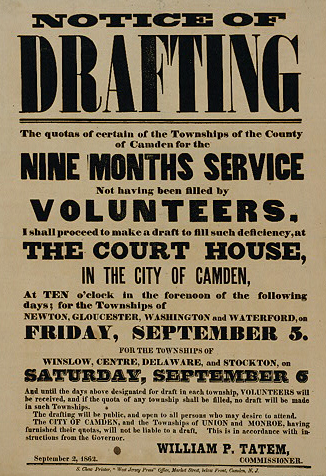
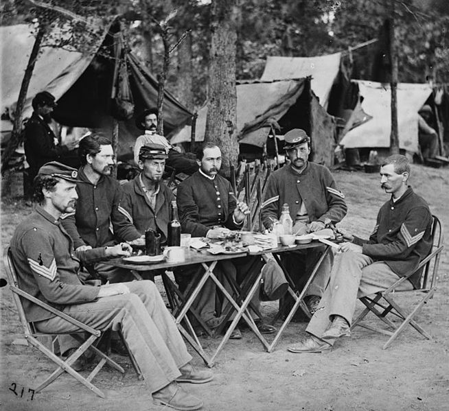
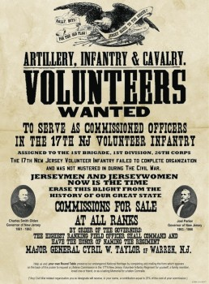
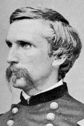
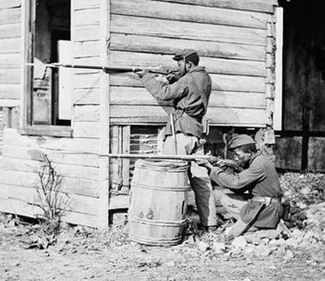

|
The Union Army was comprised of the United States Army and a
volunteer army made up largely of citizen-soldiers who
fought in the most costly and bloodiest war in United States
history. The Civil War's victorious army, after a bumpy
start, became the largest, and best supplied force the world
had ever witnessed. By May of 1865 the soldiers in the Union
Army numbered over 1,000,000, and the total count of men who
served in 3-year enlistments was over 2,300,000. Most
importantly, the Union Army was responsible for reuniting
the nation and liberating 4 million slaves in the
Confederacy.
Creating and sustaining a formidable army to oppose
Southern rebellion was initially very difficult. The North,
like the South, was totally unprepared to train and supply
the large number of men to fight what quickly became a total
war. In early 1861, the regular army (the U.S. Army)
consisted of only 15,259 enlisted men and 1,000 officers.
After Fort Sumter, President Abraham Lincoln called for
75,000 militia to serve for 3 months. Northern governors
offered 300,000 more troops, and were responsible for
providing equipment and uniforms.
In May of 1861, without explicit authority from Congress,
not in session until July, Lincoln increased the size of the
regular army to just over 22,000. At the same time the
president called for 42,000 three-year volunteers. Lincoln
believed his position as commander in chief allowed for his
actions without congressional approval.
In July 1861, Congress affirmed the president's
extra-legal decisions and authorized a volunteer army of
500,000 men. The national legislators also called for
300,000 more men for three-year terms. As the war
progressed, volunteering declined dramatically. Though the
North had a large population advantage over the South
(18,936,579 to 5,447,646; with 4,559,872 versus 1,064,193 of
draft age) the terrible costs of the war made young men
reluctant to join the army. Losses through battlefield
causalities, desertion, illness and expiration of enlistment
made it imperative to add more soldiers. Congress issued
another call for 300,000 volunteers in July of 1862. The low
response led to the bounty system, which offered cash
inducements to enlist.
The Draft
By spring of 1863, the Union army was in need of still
more men. On March 3, Congress passed the Enrollment Act
calling for the first forced conscription in United States
history. By its terms, states were required to fill a
certain quota of troops based on population, and previous
enlistment numbers. Any state failing to fill its quota
|

A notice announcing the draft in Camden, New Jersey.
|
would be subject to the draft. The Enrollment Act also
contained a provision that allowed a person to hire a
substitute or pay $300 to avoid service. Over 125,000 men
took advantage of this. These exclusions reinforced the
deep-rooted but erroneous notion among the immigrant working
class that the Civil War was a "rich man's war and a poor
man's fight." Resentment exploded into an anti-draft riot
in New York City in 1863. After several days of rioting,
Union combat troops were brought in from Gettysburg to put
an end to the chaos.
Ultimately, draftees were not an especially important
part of the Union army. Less than one man in ten was a
draftee, and beyond that, draftees tended to be poor
soldiers. This is not to say that the draft was not
important to the Union army, however. At the same time that
Congress created the draft, it also established a series of
incentives, mostly cash bonuses, in exchange for voluntary
enlistment. Any soldier who was drafted forfeited these
bonuses, while also carrying the stigma of being a draftee.
It is impossible to say how many soldiers entered the ranks
voluntarily in order to collect their enlistment bounty and
to avoid being drafted, but certainly the number was
substantial.
The Union army, like its counterpart, was divided into
three parts: infantry, cavalry, and artillery, with by far
the largest numbers in the infantry. In 1861, the cavalry
and artillery forces were attached to infantry. This
structure often did not allow concentration of cavalry and
artillery where it was most needed. In 1862, the army
converted a number of cavalry regiments into three formal
mounted brigades. By 1863, a cavalry corps was finally
formed consisting of about 12,000 mounted men. The new
arrangement helped the Union cavalry to compete better in
battle against their Confederate counterparts. In that same
year, artillery batteries were placed under direct control
of corps commanders. This change gave army commanders more
flexibility and less administrative work in carrying out
tactical plans.
At first, the federal government had difficulty finding
competent officers. Of the officers trained at the United
States Military Academy, one-third would resign to fight for
the Confederacy. In addition, 7 of the nation's 8 military
colleges were located in the South, and they provided extra
trained officers for the Confederate Army. As the war went
on, however, many of the Union's more incompetent officers
were weeded out, or resigned.
In the end, the formal structure of the Union command
proved superior to that of the Confederacy and evolved into
a modern staff-like organization of hundreds of men,
including a section of military intelligence. Union
officers took great risks during the Civil War. These men
were 15 percent more likely to be killed in battle than an
enlisted man. Generals had the highest risk for combat
death; they had a 50 percent greater chance of being killed
than privates. Overall, Union men actually had an almost two
and a half times better chance of dying due to disease than
from combat. During the war, the 2.5 million men who served
in the Union Army suffered 110,070 combat deaths and nearly
250,000 deaths due to disease.
By the end of the Civil War, in raw numbers, the North
had raised 2,040 regiments of which 1,696 were infantry, 272
cavalry, and 72 artillery. The Union Army totaled over
1,000,000 men under arms while the Confederate Army mustered
out only 180,000 men in uniform. This overwhelming advantage
of manpower necessarily played a role in helping the Union
to win the war.
Supplying the Army
As Union leaders dealt with manpower issues, they also
addressed the difficulties of supplying a force as large as
|

Union soldiers eating while encamped.
|
the Union army. At that time, an army of 100,000 men
required 2,500 supply wagons, 35,000 animals, and an average
of 120,000 pounds of supplies a day.
The lack of army provisions early in the war forced
states to make a concerted effort to provide troop
provisions until the federal government could organize its
Quartermaster Department and reimburse the states. This
approach to provisioning the Union army led to a variety of
problems in the first year. For example, Northern soldiers
wore uniforms of many different colors, which often made
distinguishing friend and foe difficult. The resulting
confusion ultimately led to the standardization of Union
Army uniforms after the Battle of First Bull Run to light
blue trousers and dark blue blouses.
There were many logistical issues to be resolved in order
to keep the Union army provisioned. Edwin M. Stanton, the
secretary of war from January 1862 did an excellent job of
directing and planning the various elements of the conflict
for the north. The Union Quartermaster Department, ably led
by General Montgomery C. Meigs, worked with Stanton to
supply the Union army in an effective and efficient fashion.
Despite notable glitches, after 1863 the soldiers of the
Union Army enjoyed better food, transportation, clothing,
arms, equipment, supplies, and health care than any other
army in history.
Volunteers
Volunteers formed the vast majority of the Union forces,
and came from local and state levels. Regiments were named
chronologically by state, i.e. the 2nd Pennsylvania Infantry
Regiment. Some units were formed based on ethnicity.
|

Posters calling for volunteers were
ubiquitous during the Civil War, particularly after 1861.
|
Besides "colored" troops, Scottish, Irish, and German units
were also created.
Training of the raw recruits first took place in
designated camps in each state. The men were "mustered" into
service with the U.S. volunteer army and began their lives
as soldiers. Inexperienced officers, who often just learned
the elements of drilling by reading a military manual,
emphasized regimental drill and moving from formation to
fighting. Neither mock combat nor a meaningful amount of
target practice took place. After the initial training
period, by regiments, the men would board trains or go on
ships to their assigned destinations. Most volunteers hated
the confines of camp life and were eager to get into the
battle before the war was over.
The Union Army's basic organizational unit was the
company (numbering 100) with 10 companies making up a
regiment (1,000 men per regiment for infantry and 1,200 for
cavalry), five regiments for a brigade, three brigades for a
division, and three divisions for a corps. Several corps
formed an army. The Union infantry (foot soldiers) forces
consisted of 16 armies whose names were based on major
rivers, such as the Army of the Potomac, the Army of the
James in the eastern theater; the Army of the Tennessee, the
Army of the Ohio and the Army of the Cumberland in the
western theater. Each army generally consisted of 35,000 to
40,000 men, although the Army of the Potomac was much
larger.
The army's numbers and organizational units fluctuated
during the war. When a company became depleted due to
illness, casualties, and desertions, new recruits would not
fill spots beside veteran members, which diminished combat
performance and increased casualties.
Selecting Officers
Instead, in order to encourage support for the war, new
companies were formed with higher-ranking officers appointed
by politicians. Thus, throughout the conflict, companies
were usually at reduced strength. More companies were
combined to make up regiments than army regulations
specified. Therefore, some brigades consisted of up to ten
regiments, greatly complicating the logistics of army
administration.
Political considerations were important in the
appointment of officers. At the beginning of the war, Union
soldiers, like Confederates, elected their officers. This
disastrous practice was ended after 1862; nevertheless
politics continued to play an important role in appointment
of generals, many with little military experience. By doing
so, President Abraham Lincoln gained support for the war
among key constituencies, particularly Democrats and certain
ethnic groups.
Some political appointees did quite well, and the list
included Maine's Joshua Chamberlain and John Logan of
|

Joshua Lawrence Chamberlain
|
Illinois. The majority were not nearly as well regarded.
Two generals from Massachusetts, Benjamin Butler and
Nathaniel Banks, and California's John C. Frémont performed
poorly in combat, costing men their lives. Indeed,
"political" generals performed so badly at the Battle of
First Bull Run in July of 1861, that Congress was compelled
to set up a watchdog group, the Joint Committee on the
Conduct of the War, which, among other things, established
minimum qualifications for Union officers.
Because the government relied so heavily on civilian
support for the war, public opinion and politics played a
substantial role in determining Northern strategy. The key
Union military strategy developed by Winfield Scott, and
refined and added to by George B. McClellan, Ulysses S.
Grant and others, can be summed up briefly in 3 slogans: the
"Anaconda (a huge snake who killed its victims by squeezing
them) Plan," and "On to Richmond," and "total war." The
first advocated encircling the Confederate coastline and
rivers and choking off its economic lifelines; the second
was to defeat the Southern armies in the field and capture
the Confederate capital, the third employed the first two
and added the goal of destroying the Confederate civilian
will to fight.
McClellan's 1862 Peninsula Campaign, in part, was
conceived of as a way to satisfy the Northern populace's
demand for a strike against the heart of the Confederacy.
When the Confederate army invaded Pennsylvania in 1863,
Northern military leaders knew that fast action would be
needed because Northern citizens would not abide by an
invasion of their soil. The failure of the spring Overland
Campaign in Virginia drove the northern morale to new lows
and placed Lincoln's reelection bid in jeopardy. In the fall
1864, William T. Sherman made haste to capture Atlanta in
time for the presidential elections. Sherman's success
undoubtedly clinched Lincoln's re-election.
Waging war in a democratic republic required the consent
and support of the people through elections. Lincoln, as
both president and commander in chief had to lead the
Union's war effort and explain and defend his policies to
citizens. The political and military were thus closely
connected in the Civil War. When the Union suffered severe
battlefield losses, as it did during 1861 and 1862, drastic
measures had to be taken to sustain the morale of the
northern people and achieve military aims.
Black Troops
One measure that heavily influenced the fate of the Union
|

African-American sharpshooters
|
armies and the future of the United States was Lincoln's
issuance of the Emancipation Proclamation on January 1,
1863. Although an earlier congressional act had allowed
African Americans to join the Union Army, the Proclamation
was Lincoln's first official endorsement of the idea and
resulted in the formation of the United States Colored
Troops (USCT). USCT forces totaled 178,975 by the end of the
war and made up 12% of the Union army. Over half of these
soldiers were recruited in the South, so their addition to
the Union army had the added benefit of draining the South
of needed manpower. Indeed, in August of 1863 Grant wrote
Lincoln that the "freedom of Negroes is the largest blow to
the Confederacy yet."
The peaceful demobilization of the Union army was
accomplished in record time after Appomattox. Before the
soldiers went home to their respective states, a huge
celebration was held in Washington D.C. For two days, May
23-24, 1865 the men of the Army of the Potomac and Sherman's
western army marched in the "Grand Review" down Pennsylvania
Avenue to cheering crowds. Proud of their role in winning
the war, freeing the slaves, and ensuring the continuance of
the United States of America, Union Army veterans after the
war formed a powerful group that exerted considerable
influence on the political and economic life of the reunited
nation.
Source: Joan Waugh, ed., Facts on File Encyclopedia of American
History: Civil War and Reconstruction, 1856 to 1869 (New York: Facts on
File, 2003), 364-367.
|